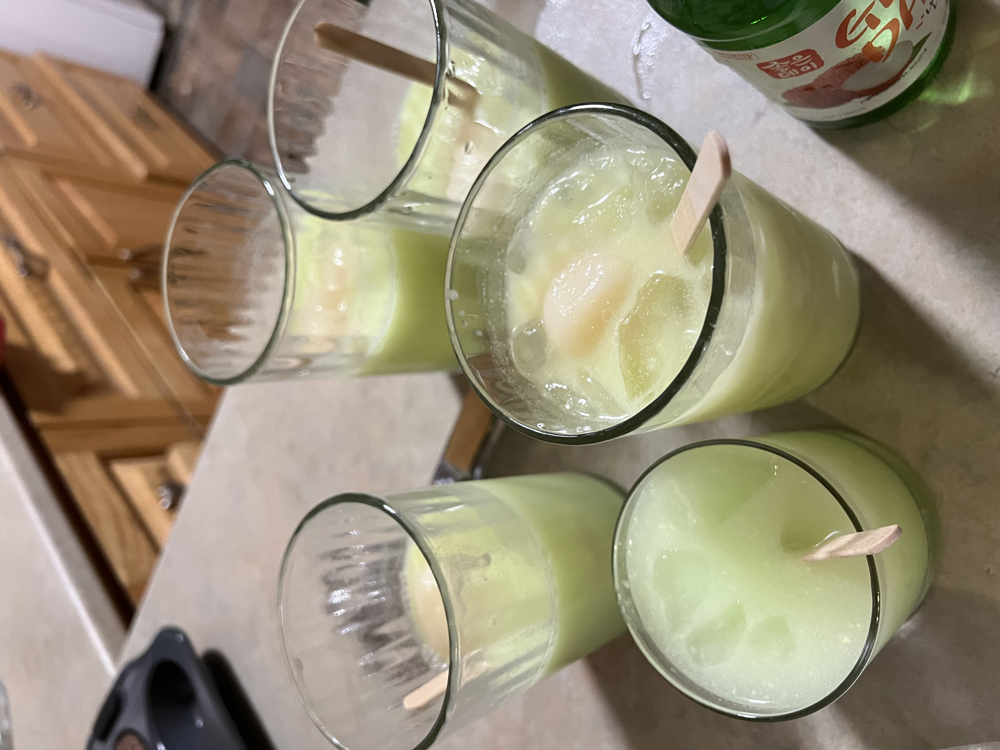

easy and affordable recipes for the average broke uni student
Mmmmmmm. Dessert. Everyone’s favourite part of any meal. And after all of your hard work prepping and serving this four-course meal, you definitely deserve a little sweet treat. Cakes, pastries, ice cream, pies, tarts, custards, puddings, baklava, tiramisu, cookies, biscuits... there’s a whole world of desserts out there! How can anyone choose the right one to end their culinary journey? Luckily for you, Jo’s got a super yummy and easy one that’s fun to make as well as consume.
This recipe is a bit of cheat code because it doubles as a dessert AND a drink wowie. Cool, creamy, with a little kick from the soju, it makes the perfect sweet little finish to your meal. It’s also super fun to drink too! Each cup gets its own Melona bar to slowly stir into the drink, or gobble up on its own (drinker’s choice). If you or any of your potential dinner guests are not yet 19, you can just omit the alcohol and still enjoy a yummy, refreshing post-meal drink-dessert thing.
1. Fill a medium glass half full with ice. Add the Melona bar, sticking it in the ice.
2. Add the soju, Sprite, and Yakult.
3. Give the drink a lil’ stirry-stir, then serve! How you wanna drink it is up to you, whether it’s sipping, chugging, or licking. Happy dessert-enjoying!
1 melona ice bar - melon flavour recommended
1 shot soju
1/2 cup sprite
1 bottle Yakult
ice
SAY HI :)